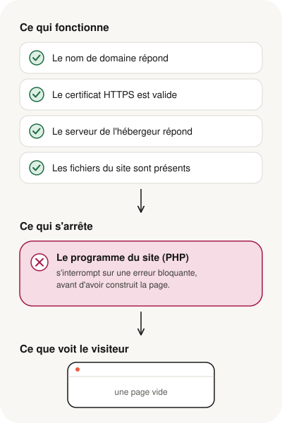

Votre site n'affiche plus qu'une page vide. Ou bien un court message d'erreur, toujours le même, quelle que soit la page. Pourtant, l'adresse répond, le cadenas est là, et votre hébergeur affirme que tout fonctionne. Les deux sont vrais en même temps : le serveur fonctionne, mais le programme qui fabrique les pages de votre site s'arrête en cours de route. C'est le plus souvent réparable, et il est rarement nécessaire de tout refaire, à condition de trouver où il s'arrête.
- Une page blanche signifie que le programme du site s'est arrêté avant d'avoir construit la page.
- Le domaine, le certificat HTTPS et l'hébergement peuvent fonctionner parfaitement pendant ce temps : le navigateur n'affiche alors aucune erreur, et les outils de vérification déclarent le site en ligne.
- Les causes les plus fréquentes : un code devenu incompatible avec la version de PHP, une extension ou un thème défaillant, une base de données injoignable.
- La première erreur en cache souvent d'autres : la réparation se fait par étapes.
- Une page blanche se répare souvent sans refaire tout le site.
Les messages que vous pouvez voir
Selon le site et le navigateur, le même problème prend plusieurs visages :
- Une page entièrement blanche, sans texte ni message.
- Sur un site WordPress : « Il y a eu une erreur critique sur ce site. » (en anglais : « There has been a critical error on this website. »), parfois suivi d'une invitation à consulter la boîte de réception de l'adresse email d'administration.
- Dans Google Chrome : « Cette page ne fonctionne pas. Impossible de traiter cette demande via votre-site.fr à l'heure actuelle. », avec le code « HTTP ERROR 500 » (en anglais : « This page isn't working. votre-site.fr is currently unable to handle this request. »).
Ces trois situations ont généralement la même origine : une erreur qui interrompt le programme du site.
Pourquoi la page blanche est si trompeuse
Le cas le plus déroutant est celui de la page blanche sans aucun message. Le navigateur n'affiche pas d'erreur, parce que, de son point de vue, il n'y en a pas : le serveur lui a répondu « tout va bien » (le code « 200 OK »), simplement avec une page vide.
Même les vérifications techniques s'y laissent prendre. Le domaine pointe vers le bon serveur, la connexion sécurisée s'établit, le certificat est valide, le serveur répond aussitôt : chaque contrôle, pris isolément, est au vert. Les outils en ligne qui vérifient si un site est « en ligne » le déclarent donc disponible. Seul le contenu manque : ce que le serveur renvoie ne contient aucune page à afficher.
C'est pour cela qu'une page blanche ne se diagnostique pas depuis l'extérieur. La réponse se trouve à l'intérieur de l'hébergement, dans le journal des erreurs du site.
Ce qui fonctionne encore, et ce qui s'arrête
Un site internet n'est pas un simple fichier affiché tel quel. À chaque visite, un programme, le plus souvent écrit en PHP, va chercher les contenus, souvent dans une base de données, puis assemble la page.

C'est un peu comme un restaurant dont la salle est ouverte, les lumières allumées et le personnel à l'accueil, mais dont la cuisine est en panne : on vous installe, mais aucun plat n'arrive jamais.
Pourquoi une page blanche plutôt qu'un message clair ?
Par sécurité, les sites en ligne n'affichent pas le détail de leurs erreurs aux visiteurs : ces messages techniques pourraient révéler des informations utiles à un pirate. Le détail est enregistré à part, dans le journal des erreurs de l'hébergement, et le visiteur ne voit qu'une page vide ou un message générique.
Les causes les plus fréquentes
1. Un code devenu incompatible avec la version de PHP
C'est la cause la plus courante sur les sites anciens. Chaque nouvelle version de PHP supprime des instructions jugées dépassées. Le jour où l'hébergeur fait passer le site sur une version plus récente, volontairement ou parce que l'ancienne n'est plus maintenue, le programme tombe sur une instruction qui n'existe plus et s'arrête. Voir notre guide pour passer de PHP 5.6 ou 7.4 à PHP 8.
2. Une extension ou un thème défaillant
Sur WordPress et les autres gestionnaires de sites, une extension mise à jour, ou au contraire trop ancienne, peut provoquer l'erreur. Le problème apparaît souvent juste après une mise à jour.
3. La base de données injoignable
Si le programme ne parvient pas à se connecter à sa base de données, il ne peut pas récupérer les contenus. Cela peut venir d'identifiants modifiés, d'une base arrêtée chez l'hébergeur, d'un déménagement mal finalisé… ou d'un code qui utilise une méthode de connexion qui n'existe plus.
4. Une mémoire insuffisante
Chaque hébergement fixe une quantité maximale de mémoire pour le programme du site. Une extension gourmande ou un site qui grossit peut dépasser cette limite.
5. Un fichier abîmé ou incomplet
Un envoi de fichiers interrompu, une modification faite directement en ligne avec une petite erreur de frappe : un seul fichier défectueux suffit à bloquer tout le site. Voir aussi ce qui peut se passer quand on envoie des fichiers en FTP.
Un cas réel, anonymisé
Un site vitrine, développé sur mesure il y a de nombreuses années, n'affichait plus qu'une page blanche. Vu de l'extérieur, tout semblait normal : le domaine répondait, le certificat HTTPS était valide, le serveur fonctionnait et les fichiers étaient bien en place.
Le journal des erreurs a montré la cause en quelques minutes : dès son démarrage, le site tentait de se connecter à sa base de données avec d'anciennes instructions, supprimées depuis PHP 7.0. L'hébergement fonctionnant désormais avec une version plus récente, le programme s'arrêtait à la toute première ligne utile.
Trois enseignements valent pour beaucoup de sites dans ce cas :
- La cause principale était identifiée, mais pas la seule. Une fois la connexion corrigée, d'autres incompatibilités pouvaient apparaître, cachées jusque-là par la première erreur.
- Une refonte complète n'était pas justifiée. Le chantier consistait à moderniser la façon dont le site accède à sa base de données, puis à corriger les autres points progressivement.
- Réparer la page blanche ne suffit pas. Un code ancien contient souvent des pratiques de sécurité dépassées. La remise en route doit aller jusqu'à une version de PHP maintenue, et s'accompagner d'une vérification de sécurité.
Ce que vous pouvez vérifier sans risque
- Toutes les pages sont-elles blanches, ou seulement certaines ? Une seule page touchée oriente vers une partie précise du site.
- Depuis quand ? Notez la date et ce qui a changé juste avant : mise à jour d'une extension, du thème, de WordPress, message de votre hébergeur.
- La version de PHP a-t-elle changé ? Elle est indiquée dans l'espace client de votre hébergeur. Un changement récent est un indice très fort.
- Sur WordPress, regardez la boîte de réception de l'adresse email d'administration du site, et ses courriers indésirables : WordPress y envoie souvent un message indiquant l'extension ou le thème en cause.
Évitez en revanche de réinstaller, supprimer ou remplacer des fichiers au hasard : vous risquez d'effacer l'information qui permet de comprendre l'erreur, ou d'en ajouter une nouvelle.
Ce qu'implique une réparation
Une remise en état sérieuse suit toujours le même fil : lire le journal des erreurs, sauvegarder le site et sa base de données, travailler sur une copie plutôt que sur le site en ligne, corriger les erreurs une par une, puis vérifier que tout le site fonctionne, administration comprise. Sur un site ancien, c'est aussi le moment de faire le point sur la version de PHP et sur la sécurité, plutôt que de réparer juste assez pour que la page s'affiche.
Une page blanche ne veut pas dire que votre site a disparu : le serveur fonctionne, c'est le programme du site qui s'arrête. La cause se trouve dans le journal des erreurs, et la réparation se fait par étapes, rarement en repartant de zéro.